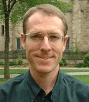
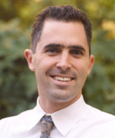
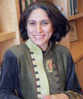
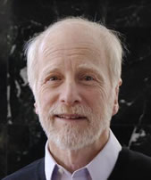

 Thierry Devos.
Thierry has been an Assistant Professor in the Department of Psychology at San Diego State University since 2002. His research focuses on how social identities operate outside of conscious awareness and control. Specifically, he is interested in 1) the implicit interconnections between ethnic and national identities, and 2) factors affecting the implicit academic self-concept of underrepresented groups.
Thierry est Professeur Assistant au Département de Psychologie de l’Université d’État de San Diego (San Diego State University) depuis 2002. Ses recherches visent à cerner comment les identités sociales opèrent à un niveau non conscient ou non contrôlable. De manière plus précise, il s’intéresse aux rapports implicites entre identités ethniques et nationales, et aux facteurs qui affectent le concept de soi implicite des membres de groupes minoritaires ou défavorisés dans le champ scolaire ou académique.
 Brian Nosek.
– 1995: B.S., Cal Poly, San Luis Obispo; Psychology; Minors: Women's Studies, Computer Science
– 1998: M.S., Yale University (Advisor: Mahzarin R. Banaji)
– 1999: M.Phil. Yale University (Advisor: Mahzarin R. Banaji)
– 2002 : Ph.D., Yale University (directrice : Mahzarin R. Banaji)
– 2001-02: Exchange Scholar, Harvard University
– 2005: Visiting Scholar, Stanford University
– 2002-present: Assistant Professor, Department of Psychology, University of Virginia
– Editorial Board: Journal of Personality and Social Psychology - Attitudes and Social Cognition, 2004
– Research interests: Implicit Cognition; Automaticity; Ideology; Attributions of Responsibility; Morality; Attitudes, Beliefs, and Identity; Person-Situation Interactions; Affect and Cognition; Social Cognition; Political Psychology; Memory; Research Methodology; Quantitative Methods; Technology and Innovation
– Present Graduate Students: Kate Ranganath, Colin Smith, Nicole Lindner, Jennifer Joy, Carlee Hawkins, Yoav Bar-Anan, Jesse Graham, Selin Kesebir
– Post-Doctoral and Research Associate Collaborators: Frederick Smyth, N. Sriram
– Visiting Scholars: Bogdan Tulbure (2007), Michelangelo Vianello (2004)
– Principal Investigator: R-01 NIMH "A Virtual Laboratory for the Social and Behavioral Sciences"; NSF-REESE "Implicit Cognition in STEM Education"
– Awards: 2007 Michele Alexander Early Career Award for scholarship and service from the Society for Psychological Study of Social Issues; 2006 Young Investigator Award in Experimental Psychology: General; 2006 University of Virginia Department of Psychology Outstanding Professor Award
 Mahzarin Banaji.
– 1976: BA, Nizam College, Hyderabad, India
– 1978: M.A. Osmania University, Hyderabad, India
– 1982: M.A. Ohio State University (Advisor: Anthony G. Greenwald)
– 1986: PhD, Ohio State Univeristy (Advisor: Anthony G. Greenwald)
– 1985-86: NIH Postdoctoral Fellow, University of Washington (Sponsor: Claude Steele)
– 1986-2002: Assistant, Associate, Full Professor, Department of Psychology, Yale University
– 2001: Reuben Post Halleck Professor of Psychology, Yale University
– 2002-present: Richard Clarke Cabot Professor of Social Ethics, Department of Psychology, Harvard University; Carol K. Pforzheimer Professor, Radcliffe Institute for Advanced Study
– Fellow: American Association for the Advancement of Science; Society for Experimental Psychologists; American Psychological Society, American Psychological Association (Divisions 2, 8, 9); Society of Experimental Social Psychology
– Secretary, APS, 1997-1999; Chair, Task Force on the Dissemination of Psychological Science, APS, 1997-1998; Board of Scientific Affairs, APA, 1998-2002; Society of Experimental Social Psychology, Executive Committee, 1996-1999; Board Member, Foundation for Personality and Social Psychology
– Co-Editor: Essays in Social Psychology, Psychology Press; Advisory Board, Social Cognition and Social Neuroscience, Oxford
– Associate Editor: Journal of Experimental Social Psychology, 1994-1996; Psychological Review, 1996-1998
– Editorial Board Member (at present, selected): Psychological Science; Journal of Personality and Social Psychology: ASC; Social Cognition; Social, Cognitive, & Affective Neuroscience; Perspectives on Psychological Science
– Over 100 scholarly articles and book chapters
– Awards (selected): Lex Hixon Award for Teaching Excellence, Yale College, 1991; John Simon Guggenheim Foundation Fellowship, 1997; James McKeen Cattell Fellowship, 1997; Gordon Allport Prize for Intergroup Relations, 2000; Morton Deutsch Award for Social Justice
– Research interests: Experimental Psychology: Social cognition; unconscious cognition; attitudes, beliefs, values; self and identity; research methods; social neuroscience; social cognitive development
– Ph.D. students: Scott Akalis, Andy Baron, Irene Blair, Siri Carpenter, Dolly Chugh; William Cunningham, Nilanjana Dasgupta, Jack Glaser, Aiden Gregg, Curtis Hardin, Kristin Lane, Kristi Lemm, Jamaal McDell, Brian Nosek, Kristina Olson, Jaihyun Park
– Postdocs: Stephanie Goodwin, Thierry Devos, Jason Mitchell, Dana Carney, Kristin Shutts
 Mahzarin Banaji.
– 1959: A.B., Yale College
– 1961: A.M., Harvard University (Advisor, Elliot Aronson)
– 1963: Ph.D., Harvard University (Advisor, Gordon W. Allport)
– 1963-65: Postdoctoral Fellow, Educational Testing Service
– 1965-1986 Assistant Professor to Professor (1971), Ohio State University, Department of Psychology
– 1986-present: Professor, University of Washington, Department of Psychology
– Fellow: Society of Experimental Psychologists, American Psychological Association, American Psychological Society, American Association for the Advancement of Science
– Associate Editor (1972-76) and Editor (1977-1979): Journal of Personality and Social Psychology
– Chair: Society of Experimental Social Psychology (1985-86)
– Donald T. Campbell Award, Society of Personality and Social Psychology (1994)
– Thomas M. Ostrom Award, Person Memory Interest Group (2001)
– Research Scientist Award, National Institute of Mental Health (1998-2003)
– 5 edited or co-authored books; 100+ scholarly articles and book chapters
– Research interests: Attitudes and attitude change; unconscious cognition; self; prejudice; stereotypes; student ratings in higher education
– PhDs Supervised: Richard L. Abrams, Stuart M. Albert, Mahzarin R. Banaji, Michael H. Baumgardner, Steven J. Breckler, John T. Cacioppo, Dallas M. Cullen, Shelly D. Farnham, Sean C. Draine, Paulette M. Gillig, Mitzi M. S. Johnson, Mark R. Klinger, Michael R. Leippe, Robert E. Love, Dorothy Markiewicz, Anthony R. Pratkanis, David L. Ronis, Jane E. Swanson, Mark E. Vande Kamp, Gary L. Wells
– Postdocs supervised: Geoffrey L. Cohen, Nilanjana Dasgupta, Elizabeth L. Haines, Renata Kodilja, Thomas J. Liu, Dominika Maison, T. Brad Pinter, Laurie A. Rudman